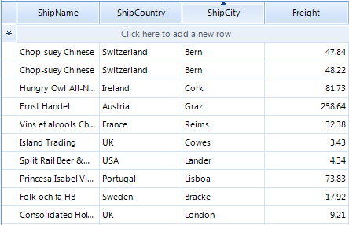

Custom Sorting
Custom sorting is a flexible mechanism for sorting RadGridView rows using custom logic. It has a higher priority than the applied
SortDescriptors (added either by code or by clicking the header row).
Custom sorting is applied if user sorting is enabled by the RadGridView.EnableSorting or
__GridViewTemplate.EnableSorting__properties. By default, sorting is enabled at all levels.
RadGridView provides two mechanisms for custom sorting:
Handling the CustomSorting event
Replacing the RadGridView sorting mechanism by providing a custom SortComparer
Using the CustomSorting event
The CustomSorting event is fired if custom sorting is enabled. The arguments of the event provide the following properties:
Template – the template that holds the rows which are going to be sorted
Row1, Row2 – the rows to be compared
SortResult – returns negative value when Row1 is before Row2, positive value if Row1 is after Row2 and zero if the rows are have equal values in a specified column.
Handled – defines if the comparison of the two rows is processed by the custom algorithm or by the applied sort descriptors.
The following example demonstrates how to handle the CustomSorting event sorting the RadGridView rows
ascending by the values of the Freight column. The defined SortOrder for the Freight column in this
example assumes that rows sorting is not applied. All RadGridView rows are processed by the custom logic.
[C#]
this.radGridView1.EnableCustomSorting = true;
this.radGridView1.CustomSorting += new GridViewCustomSortingEventHandler(radGridView1_CustomSorting);
this.radGridView1.Columns["Freight"].SortOrder = RadSortOrder.Ascending;
[C#]
private void radGridView1_CustomSorting(object sender, GridViewCustomSortingEventArgs e)
{
decimal row1Freight = (decimal)e.Row1.Cells["Freight"].Value;
decimal row2Freight = (decimal)e.Row2.Cells["Freight"].Value;
if (row1Freight > row2Freight)
{
e.SortResult = 1;
}
else if (row1Freight < row2Freight)
{
e.SortResult = -1;
}
else
{
e.SortResult = 0;
}
}
[VB.NET]
Me.RadGridView1.EnableCustomSorting = True
Me.RadGridView1.Columns("Freight").SortOrder = RadSortOrder.Ascending
[VB.NET]
Private Sub RadGridView1_CustomSorting(ByVal sender As Object, ByVal e As Telerik.WinControls.UI.GridViewCustomSortingEventArgs) Handles RadGridView1.CustomSorting
Dim row1Freight As Decimal = CDec(e.Row1.Cells("Freight").Value)
Dim row2Freight As Decimal = CDec(e.Row2.Cells("Freight").Value)
If row1Freight > row2Freight Then
e.SortResult = 1
ElseIf row1Freight < row2Freight Then
e.SortResult = -1
Else
e.SortResult = 0
End If
End Sub

The following example demonstrates the usage of the Handled property of the CustomSorting
event arguments. It uses custom sorting to sort the rows ascending by the values of the Freight column. This sorting is applied to the rows
that have a value in the Freight column greater than "0.33". The rest are handled by the defined SortDescriptor
and sorted descending by the values of the Freight column.
[C#]
this.radGridView1.EnableCustomSorting = true;
this.radGridView1.CustomSorting += new GridViewCustomSortingEventHandler(radGridView1_CustomSorting);
SortDescriptor sortDescriptor = new SortDescriptor("Freight", ListSortDirection.Descending);
this.radGridView1.SortDescriptors.Add(sortDescriptor);
[C#]
private void radGridView1_CustomSorting(object sender, GridViewCustomSortingEventArgs e)
{
decimal row1Freight = (decimal)e.Row1.Cells["Freight"].Value;
decimal row2Freight = (decimal)e.Row2.Cells["Freight"].Value;
if (row1Freight < 0.33m || row2Freight < 0.33m)
{
e.Handled = false;
return;
}
if (row1Freight > row2Freight)
{
e.SortResult = 1;
}
else if (row1Freight < row2Freight)
{
e.SortResult = -1;
}
else
{
e.SortResult = 0;
}
}
[VB.NET]
Me.RadGridView1.EnableCustomSorting = True
Dim sortDescriptor As New SortDescriptor("Freight", ListSortDirection.Descending)
Me.RadGridView1.SortDescriptors.Add(sortDescriptor)
[VB.NET]
Private Sub RadGridView1_CustomSorting(ByVal sender As Object, ByVal e As Telerik.WinControls.UI.GridViewCustomSortingEventArgs) Handles RadGridView1.CustomSorting
Dim row1Freight As Decimal = CDec(e.Row1.Cells("Freight").Value)
Dim row2Freight As Decimal = CDec(e.Row2.Cells("Freight").Value)
If row1Freight < 0.33D OrElse row2Freight < 0.33D Then
e.Handled = False
Return
End If
If row1Freight > row2Freight Then
e.SortResult = 1
ElseIf row1Freight < row2Freight Then
e.SortResult = -1
Else
e.SortResult = 0
End If
End Sub

Implementing sorting mechanism by using SortComparer
You can replace the sorting mechanism in RadGridView with a custom one by setting the SortComparer of the
GridViewTemplate.
The following example demonstrates how to use a custom sorting mechanism in RadGridView to sort the RadGridView rows
ascending by the length of the ShipCity column:
[C#]
this.radGridView1.Columns["ShipCity"].SortOrder = RadSortOrder.Ascending;
this.radGridView1.MasterTemplate.SortComparer = new CustomComparer();
[C#]
public class CustomComparer : IComparer<GridViewRowInfo>
{
public int Compare(GridViewRowInfo x, GridViewRowInfo y)
{
int row1ShipCityLenght = x.Cells["ShipCity"].Value.ToString().Length;
int row2ShipCityLenght = y.Cells["ShipCity"].Value.ToString().Length;
int result = 0;
if (row1ShipCityLenght > row2ShipCityLenght)
{
result = 1;
}
else if (row1ShipCityLenght < row2ShipCityLenght)
{
result = -1;
}
return result;
}
}
[VB.NET]
Me.RadGridView1.Columns("ShipCity").SortOrder = RadSortOrder.Ascending
Me.RadGridView1.MasterTemplate.SortComparer = New CustomComparer()
[VB.NET]
Public Class CustomComparer
Implements IComparer(Of GridViewRowInfo)
Public Function Compare(ByVal x As GridViewRowInfo, ByVal y As GridViewRowInfo) As Integer Implements System.Collections.Generic.IComparer(Of Telerik.WinControls.UI.GridViewRowInfo).Compare
Dim row1ShipCityLenght As Integer = x.Cells("ShipCity").Value.ToString().Length
Dim row2ShipCityLenght As Integer = y.Cells("ShipCity").Value.ToString().Length
Dim result As Integer = 0
If row1ShipCityLenght > row2ShipCityLenght Then
result = 1
ElseIf row1ShipCityLenght < row2ShipCityLenght Then
result = -1
End If
Return result
End Function
End Class

Create custom sort order criteria for a particular column.
You can use the custom sorting functionality to change the default sorting behavior for a particular column.
This will leave the sorting functionality for the other columns intact and the user will be able to sort them in the usual way.
However when the user presses the column header cell for the column that we have changed the sort criteria, it will be sorted by the custom criteria.
To achieve this we can use the SortDescriptors collection of RadGridView.
For example you can order the rows by the text length in the Customer column with the following code:
[C#]
void radGridView1_CustomSorting(object sender, Telerik.WinControls.UI.GridViewCustomSortingEventArgs e)
{
int descriptorIndex = -1;
for (int i = 0; i < this.radGridView1.SortDescriptors.Count; i++)
{
if (radGridView1.SortDescriptors[i].PropertyName == "Customer")
{
descriptorIndex = i;
break;
}
}
if (descriptorIndex != -1)
{
string cellValue1 = e.Row1.Cells["Customer"].Value.ToString();
string cellValue2 = e.Row2.Cells["Customer"].Value.ToString();
int result = cellValue1.Length - cellValue2.Length;
if (result != 0)
{
if (this.radGridView1.SortDescriptors[descriptorIndex].Direction == ListSortDirection.Descending)
{
result = -result;
}
}
e.SortResult = result;
}
else
{
e.Handled = false;
}
}
[VB.NET]
Private Sub radGridView1_CustomSorting(sender As Object, e As Telerik.WinControls.UI.GridViewCustomSortingEventArgs)
Dim descriptorIndex As Integer = -1
For i As Integer = 0 To Me.radGridView1.SortDescriptors.Count - 1
If radGridView1.SortDescriptors(i).PropertyName = "Customer" Then
descriptorIndex = i
Exit For
End If
Next
If descriptorIndex <> -1 Then
Dim cellValue1 As String = e.Row1.Cells("Customer").Value.ToString()
Dim cellValue2 As String = e.Row2.Cells("Customer").Value.ToString()
Dim result As Integer = cellValue1.Length - cellValue2.Length
If result <> 0 Then
If Me.radGridView1.SortDescriptors(descriptorIndex).Direction = ListSortDirection.Descending Then
result = -result
End If
End If
e.SortResult = result
Else
e.Handled = False
End If
End Sub